In the shadows of medieval castles and cathedrals across Southern France, local folklore has fascinated the world for centuries. Legends of sacred secrets and hidden mysteries have long attracted the interest of researchers and truth-seekers alike.
Dan Brown, author of The Da Vinci Code, weaves a tale around a religious secret so powerful it could threaten the very foundation of the Roman Catholic Church. In his novel, he suggests Mary Magdalene was not merely a devoted follower of Jesus, but also his wife and the mother of his child. Their union, he claims, produced a bloodline. The term “Holy Grail” is reinterpreted — not as a cup, but as a metaphor for the womb that carried Christ’s blood in the form of a child. This lineage is now referred to as the “Bloodline of the Holy Grail.”
Although The Da Vinci Code is fiction, it draws from modern books that present speculative theories — including the idea that Jesus and Mary Magdalene were a couple who had children. Their descendants are believed to have married into the royal bloodlines of France and, eventually, Scotland. The surname most often linked to this holy bloodline is St. Clair in France — or Sinclair, the anglicized form, in Scotland.
After reading The Da Vinci Code, I was instantly intrigued by the possibility that this could be true. I began reading everything I could find on the topic and related subjects. One recurring theme in these books was the suggested connection between the Knights Templar, the Sinclair name, and Mary Magdalene — a connection rooted more in legend than in documented history. The Knights Templar are often described as the “Protectors of the Holy Grail.”
In one book, The Hiram Key, I discovered that the St. Clairs — or Sinclairs — had once ruled over the remote and obscure Orkney Islands in Northern Scotland. This struck me as strange, because my own family — the Brass family — had emigrated from the Orkney Islands to Canada in the 1850s. According to oral family history, the Brass family were Protestant Huguenots from France who fled to Scotland centuries ago. Our surname was originally Bras or de Bras.
I found it coincidental that my ancestors had lived in the same regions as the Sinclairs. My curiosity was piqued. I began to wonder whether there had ever been any interaction between our families.
I was astounded when researching my Brass ancestry in the Orkney Islands, I found my five times great-grandfather, Magnus Brass had married a woman named Katherine Sinclair. After additional research, I discovered she was a descendant of the Sinclair royals. She was from a cadet line who did not inherit royal titles. Titles were most often passed to the eldest son or another male relative. The cadet line is from a junior line of descent, most likely a younger son.
First, I questioned whether there was any truth to the legend that Jesus and Mary were husband and wife. If so, did they have children and descendants? And could my ancestors’ paths have crossed with those of the Sinclairs in Scotland?
After discovering this connection, I decided to travel to France to investigate further.
Through genealogical research, I found that the French form of our family name had early origins in the southern part of France. The earliest record I uncovered was of a man named Pons de Bras from 1027, in the region of Bouches-du-Rhône. This is the very region where local legends say Mary Magdalene arrived sometime after the crucifixion. It was the second time I discovered a branch of my family connected, in some way, to the long‑standing traditions surrounding Mary Magdalene.
Over time, the name migrated west into the Aude, where it appeared in greater concentration centuries later.
I would eventually learn that both Bouches-du-Rhône and the Aude played pivotal roles in historical events tied to the mystery described in The Da Vinci Code.
One particularly compelling story centers on the village of Rennes-le-Château — a key source of inspiration for both fictional and non-fictional accounts of the Holy Grail mystery.
Rennes-le-Château & Bérenger Saunière
Rennes-le-Château is a quaint hilltop village with breathtaking views of the Pyrenees Mountains. Located in the Aude region — where the Bras name was concentrated — it became famous due to its enigmatic parish priest, Bérenger Saunière.
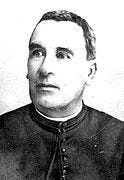
The mystery surrounding Rennes-le-Château involves how Saunière acquired immense wealth and undertook extensive renovations throughout the village. His additions were filled with strange symbolism, as if he were trying to convey cryptic messages about a deeper mystery.
According to local accounts and long‑standing village tradition, workers uncovered a pot filled with medals and gold during the renovation of the church beneath a stone slab near the altar. Saunière dismissed the items as worthless religious trinkets, but villagers believed they were far more valuable. Additional discoveries allegedly included coins, ancient parchments, and even a tomb or crypt. One stone depicted two men on horseback — a symbol associated with the Knights Templar.
Many speculate that these treasures were linked to the Visigoths or the Knights Templar, possibly even part of the legendary Holy Grail. Some researchers have speculated that Saunière may have uncovered a sacred genealogy — possibly even connected to the legendary bloodline of Jesus and Mary Magdalene.
Symbols of Mary Magdalene
Saunière’s constructions appear to honor Mary Magdalene. He built a tower named the Tour de Magdala, referencing the Aramaic word for “tower” or “fortress.” Mary was said to be from the town of Migdal, and some believe Jesus gave her the title to signify her spiritual stature. The tower contains 22 steps, symbolizing her feast day: July 22.
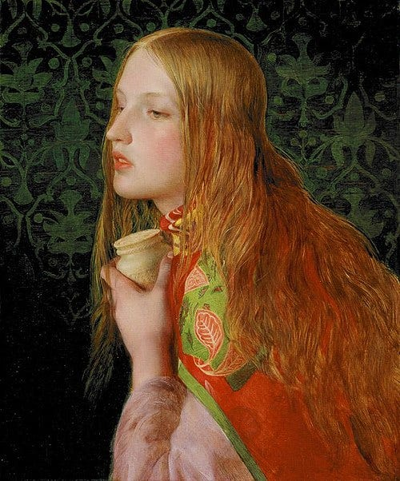
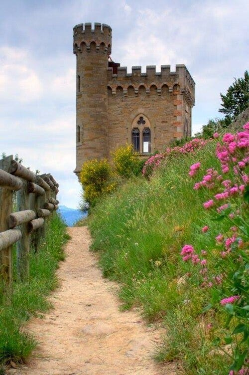
He also built a manor house called Bethania, referencing Bethany — the biblical home of Mary Magdalene, Martha, and Lazarus.
Inside the church, Saunière added features that seem designed to transmit secret messages. In the 14th Station of the Cross, Jesus is shown being removed from the tomb — contradicting the biblical account that he was placed there before nightfall. Some say his eyes appear open, suggesting he may have survived the crucifixion.
Another curious detail is the arrangement of statues within the church. The initials of five saints spell out G-R-A-I-L:
- G — Saint Germain
- R — Saint Roch
- A — Saint Anthony (Hermit or Padua)
- I — Saint John the Baptist (Ioannes)
- L — Saint Luke
At the center stands Mary Magdalene, with her initial “M” forming the focal point — suggesting she is the Keeper of the Grail. This may symbolize her role as bearer of the Holy Grail bloodline and explain why the Knights Templar are so closely associated with her.
The Three Marys & the Journey to France
A long‑standing Provençal tradition claims that Mary Magdalene arrived in Southern France about twelve years after the crucifixion. She was said to be accompanied by Martha (her sister), Lazarus (her brother), Mary Salome (sister of the Virgin Mary), and Mary Jacobe (possibly another sister of the Virgin Mary). These are the Three Marys mentioned at Jesus’s tomb in biblical accounts. The fishing village where they landed was named Les Saintes Maries de la Mer in their honor.
Also among them was Maximinus (Saint Maximin), one of Jesus’s 72 disciples and later bishop of Aix-en-Provence.
The Three Marys and the Mystery of Sara
According to legend, a young girl traveled with Mary Magdalene to Provence, France. Some traditions describe her as a servant, while later legends portray her as the possible daughter of Mary Magdalene — and, in some versions, of Jesus. Her name was Sara — now venerated as Saint Sara. Intriguingly, the name Sara means “princess” in Hebrew. She is traditionally depicted with dark skin, which may be symbolic. In ancient times, darkness often represented secrecy or something hidden. This imagery could lend weight to the theory that Mary and Jesus had a child.
The area where they are said to have landed is called Bouches-du-Rhône. As I mentioned earlier, this region is the earliest known reference point for my French family name. I found this coincidence striking. During my travels, we visited Les Saintes-Maries-de-la-Mer and the tomb of Saint Sara beneath the church there. A dark-skinned effigy of Sara stands beside what is believed to be her crypt.
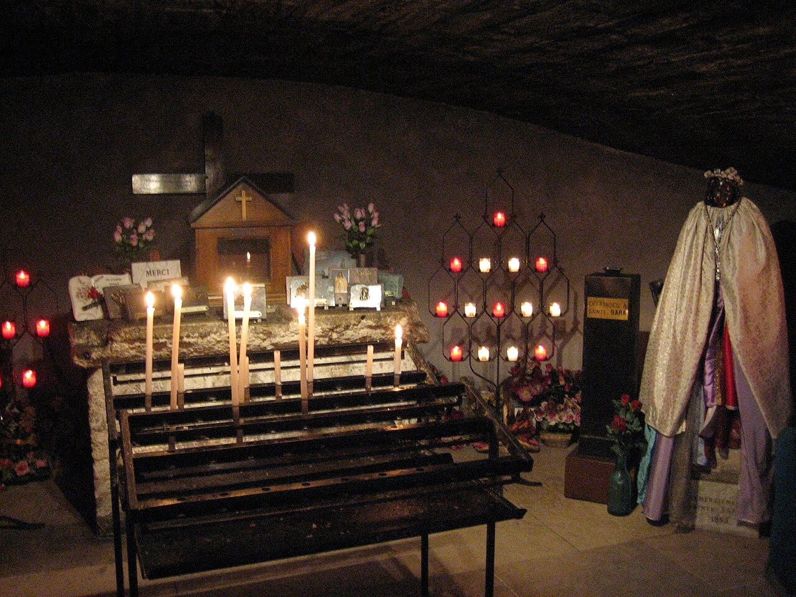
The Town of Bras
Later, we journeyed to a town bearing our family’s French surname — Bras — located about 150 kilometers from Les Saintes-Maries-de-la-Mer. Bras is a picturesque hillside village surrounded by oak and pine forests, vineyards, and olive groves. In medieval times, it served as a central hub for the Knights Templar.
Centuries ago, most common people did not have surnames. They were often identified by the town or village they came from — like Leonardo da Vinci, who hailed from Vinci. In early genealogical records, our name appeared as de Bras, which made me wonder if this town was the origin of our family name.
Discoveries in Bras
While researching Bras, I made some startling discoveries. The town and its fortress — known as a commanderie — were built by the Knights Templar. Even more surprising was the name of the Templar commander who oversaw its construction: Foulques de Bras. I thought, “What are the odds that the builder of this place shared our ancient family name?”
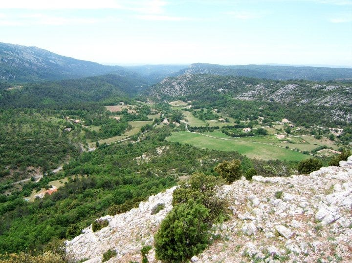
Chapel of Our Lady of Bethlehem (Built by the Knights Templar)
Foulques’s name intrigued me. I searched for its meaning, suspecting it might hold deeper significance. While I couldn’t find a direct French translation, a local dialect suggested the name meant “tribe” or “people.” In French, bras typically means “arm,” but it can also refer to a branch — like a branch of a river. The town’s original name was Brachium de Bras, with brachium being Latin for both “arm” and “branch.” So, the name could be interpreted as “arm of the arm” or “branch of the branch.”
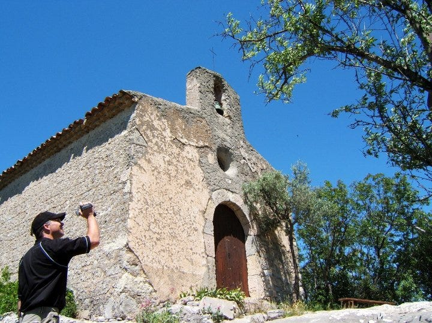
This fascinated me, especially since one of Jesus’s messianic titles in the Bible is “the Branch.” Could “Tribe of the Branch” refer to someone from the tribe of Jesus — or perhaps the Tribe of Judah, to which Jesus belonged?
Some esoteric writers suggest that Templar commanders like Foulques were part of a spiritual lineage that preserved ancient wisdom. This esoteric knowledge may have roots in Egyptian, Judaic, or Cathar traditions. It’s been theorized that individuals like Foulques de Bras passed this sacred knowledge on to future leaders within the secretive Templar order.
Saint-Maximin-la-Sainte-Baume
Another remarkable discovery was the proximity of Bras to Saint-Maximin-la-Sainte-Baume — just ten kilometers away. This town is home to a basilica dedicated to Mary Magdalene, which claims to house her remains.
Beneath the church lies a crypt where her relics are displayed. We descended into the chapel and saw the golden reliquary said to contain her skull.
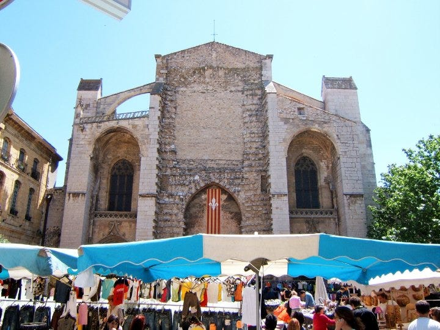
The Skull of Mary Magdalene
A preserved lock of hair kept at the church has been reported to belong to the K1a1b1a subclade, common among Mediterranean Jewish populations. This suggests a Mediterranean Jewish ancestry. Some sources estimate the age of the remains to be around 50 years old. While circumstantial, this evidence may support the claim that these are indeed the remains of Mary Magdalene.
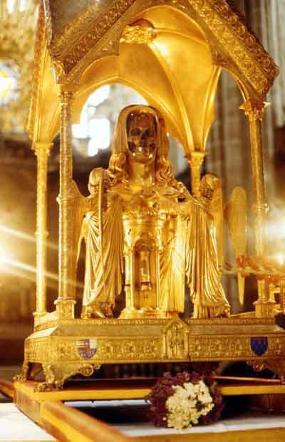
Saunière’s Discovery and a Deadly Chain of Events
If Bérenger Saunière, the priest of Rennes-le-Château, discovered proof or artifacts confirming a sacred bloodline, it might explain a deadly event that followed.
On September 21, 1891, Saunière wrote in his diary: “Letter from Granès. Discovery of a tomb. Rain in the evening.” Some believe Granès tipped him off about where to search in the church.
Within a week, Saunière met with fellow priests Abbé Antoine Gélis and Abbé Henri Boudet. Given the timing, it’s likely he shared the secrets he had uncovered. What followed was a series of disturbing events.
Father Gélis, one of Saunière’s confidants, began exhibiting paranoid behavior. He became reclusive, installed a bell alarm system in his home, and only allowed visitors by password. It was clear he feared someone — or several people.
The Murder of Father Gélis
In 1881, Gélis survived an attempted murder. This confirmed that the threats he feared were real.
Then, in 1897, he was found bludgeoned to death in his kitchen — struck 14 times with fireplace tongs and a hatchet. His body was posed in what some described as a ritualistic manner. There were no signs of forced entry, and the alarm system had been disabled. It’s believed he knew his killer.
Oddly, the money in his home was untouched, but the house had been ransacked — suggesting the intruder was searching for something specific. Some speculate Gélis was tortured for documents or information related to the secret Saunière had shared.
An encoded document was found in the house and sent to Paris for decoding. It revealed hiding places for 13,000 francs in gold coins — enough to live on for twenty years at the time. Adjusted for inflation and gold value, that would be about $180,000 today.
I wondered whether Gélis had been silenced to prevent him from revealing the secret of Rennes-le-Château. Could he have been eliminated by an agent of the Vatican seeking to suppress evidence of a bloodline from Jesus and Mary Magdalene?
A Cryptic Clue
One of the strangest clues left behind was a note written on cigarette paper — odd, since Gélis didn’t smoke. It read: “Viva Angelina.” Translated, this means “Long live the messenger of God.” Angelina is the feminine form of Angelus, or “angel.” In this context, the only feminine “messenger of God” I could think of was Mary Magdalene. Was this note left by a protector of the secret — or someone mocking and sending a warning?
Symbolism and Final Rites
It seems that many priests who were close to Saunière incorporated strange symbolism into their churches or writings.
One notable example is Father Rivière, who, according to legend, administered Saunière’s Last Rites. Witnesses say Rivière left the room pale and visibly shaken by what Saunière had told him. He was so disturbed that he didn’t complete the rite until after Saunière had passed away.
Symbols, Secrets, and the Final Clue
According to local townspeople, Saunière included some very unusual symbolic elements at his funeral. It was alleged that strange symbols were embroidered on the cloth beneath his coffin — believed by some to be Rosicrucian or Masonic in origin. His body was posed with arms crossed and head tilted, a gesture said to symbolize nobility or the role of a keeper of sacred knowledge. Several attendees, unknown to the local residents, wore dark cloaks. This led to speculation that members of a secret society were present at the service.
Here’s where the story takes a strange turn.
It is believed that sometime after Father Rivière heard Saunière’s final confession, he made curious modifications to his church in Espéraza. Most notably, he had a grotto constructed — a replica of Jesus in the tomb. The most perplexing feature of the statue is that Jesus’s eyes are open. This echoes the imagery found in the Stations of the Cross at Saunière’s church, possibly suggesting that Jesus survived the crucifixion. Could this have been the secret Saunière shared with him?
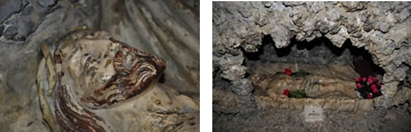
https://rennes-le-chateau.org/index.php/le-site/laffaire-berenger-sauniere/des-elements-etranges/jean-riviere-cure-desperaza/
Statue of Christ in the Tomb at Espéraza
There are some fringe claims that both Jesus and Mary Magdalene lived in this part of France after the crucifixion. It’s a wild claim, to be sure. Some narratives suggest Jesus survived the crucifixion and traveled to France, where he later died from the trauma. They say he is buried in or near the Chapel of Saint-Salvayre — “Our Saviour” — in the Aude region of Southern France.
I must say, in all my travels through southern France, I never once felt that Jesus had been there. What I did feel, however, was a much stronger sense that Mary Magdalene — and the young girl Sarah — had truly lived in this region. That impression came from the sacred sites themselves and the sheer number of churches dedicated to Mary Magdalene. These traditions are far older, while the stories about Jesus in France seem to be a modern addition, shaped largely by recent books and films.
In many sacred mystery traditions, there is frequent mention of a hidden tomb — possibly the resting place of Jesus, Mary Magdalene, or both.
These theories are highly speculative, but I can’t help feeling that all this secrecy and symbolism must point to something extraordinary. It may not be any of the theories I’ve mentioned here, but there is undeniably something explosive beneath the surface.
The Baptismal Fount at Rennes-le-Château
At the end of my tour of Saunière’s estate in Rennes-le-Château, I found myself inside the church dedicated to Mary Magdalene. I was drawn to the baptismal fount — frequently referenced in books discussing the strange symbolism of Rennes.
The font is supported by a crouching figure of the devil Asmodeus. Most writers focus on Asmodeus himself, but overlook the statues positioned above him.
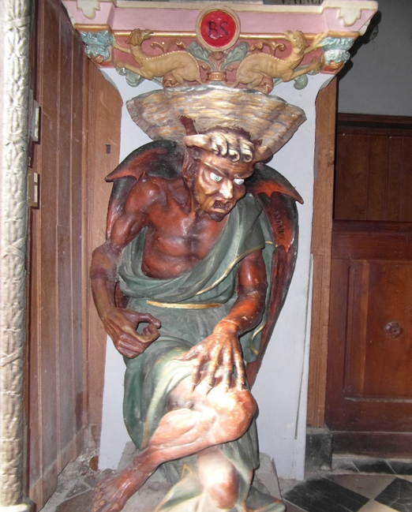
Four angels are arranged in a cross-like formation — top, bottom, left, and right — each making the sign of the cross. Beneath them is an inscription: Par ce Signe tu le Vaincras, which translates to By this sign, you will conquer him.
At first glance, one might assume this refers to conquering evil (Asmodeus) through the sign of the cross. But above the angels is a statue of an encircled cross, and at its center is a rose. I believe this is the symbol Saunière intended to highlight. It stands in reverence at the pinnacle of the entire artistic composition.
This particular style of cross — encircled with a rose — has appeared throughout my travels and research. The rose at the center has been interpreted by some writers as a reference to the Rose Line or even the legendary Bloodline of the Holy Grail.
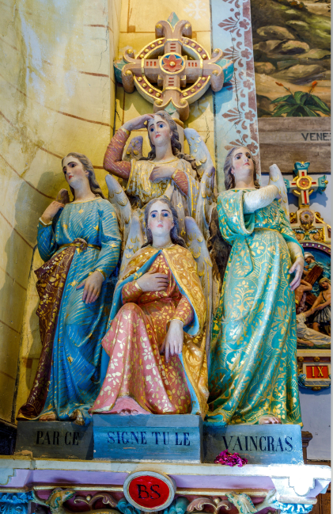
A Familiar Symbol
Although the symbol hints at a bloodline, I sensed there was something deeper. At the time, I didn’t realize I had seen it before — back in Canada. In fact, I was very familiar with it. Just another strange coincidence… or was it?
I felt that if I could decode this symbol, I might uncover the true meaning of the Holy Grail.
This was not the end of my journey. It would lead me through more twists, turns, and uncanny “coincidences.” Eventually, I would decode the image — and discover that its meaning holds the potential to heal all of humanity.
If you enjoyed this journey, follow me for the next chapter — the symbol I decoded that changed everything.